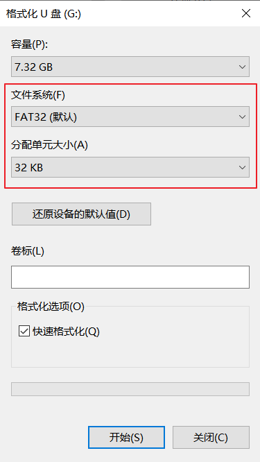

18.1. HPM_JPEG
18.1.1. 概述
HPM_JPEG这个sample通过HPM_JPEG组件进行编解码。解码后将文件显示在屏幕上，并将解码后的图像进行再次编码进行存储。
18.1.2. 硬件设置
USB盘 连接到开发板
USB0（注意：U盘格式化的 分配单元大小 不能超过32KB，建议格式化参数为FAT32/32KB），或 SD内存卡 插入到开发板sd card。LCD屏 连接到开发板
18.1.3. 工程配置
文件`CMakeLists.txt` :
set (JPEG_USE_SDCARD 1)从SD卡中读取test.jpg文件;set (JPEG_USE_UDISK 1)从u盘中读取test.jpg文件。这两个为排他选项
18.1.4. 运行现象
按需要更改CMakeLists.txt中关于目标存储/解码方式的配置
将test.jpg文件复制到目标存储根目录中
连接LCD屏和存储介质到开发板
将开发板上电
下载编译后的elf文件到开发板
如果一切正常，存储介质中的test.jpg文件将被显示在屏幕上，并且与屏幕左上角进行对齐。为了显示解码后的原始图像，解码后的显示效果不会进行缩放，如果图像大小超过屏幕大小只显示左上角部分。如果解码后图像小于屏幕大小，为了看清楚解码后图像边界，其他部分用黑色像素填充
运行结束后，会将解码后的图像再次编码成压缩比为90%的test_yuv422.jpg和压缩比为40%的test_yuv420.jpg，并存储到目标存储根目录中
如果编解码图片较大导致编解码失败，可增加HEAP_SIZE的大小
SD card has been mounted successfully
Read picture data by SD card
djob0 callback hw_status: 0x8000001c
decode: width: 640
decode: height: 480
decode: stride: 1280
ejob0 callback hw_status: 0x1c
ejob1 callback hw_status: 0x1c
save 36682 bytes to /test_yuv422.jpg finished
save 10736 bytes to /test_yuv420.jpg finished
hpm_jpeg sample end!